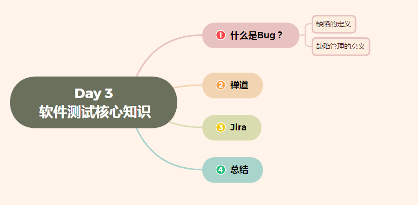
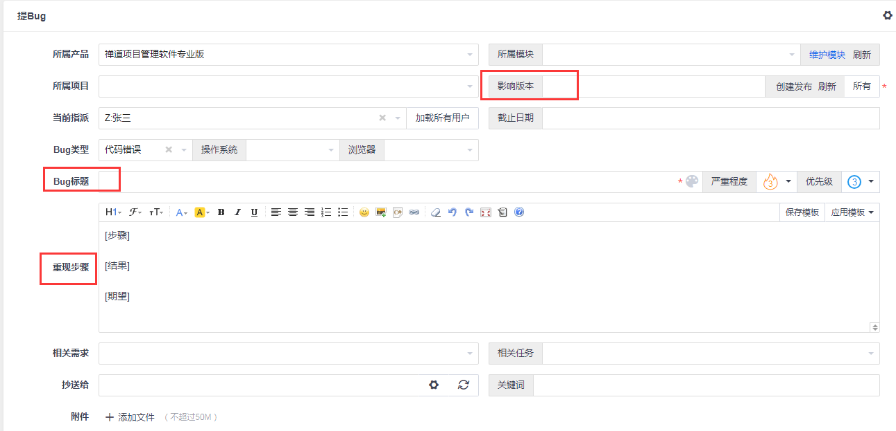

Day 4 软件测试核心知识——（什么是Bug、禅道、Jira）
Day 4 软件测试核心知识——（什么是Bug、禅道、Jira）
[TOC]

缺陷
1. 软件缺陷的概述
1.1 软件缺陷定义
- 软件缺陷, 通常又被叫做bug或者defect, 即为软 …
Day 4 软件测试核心知识——（什么是Bug、禅道、Jira）
[TOC]
缺陷
1. 软件缺陷的概述
1.1 软件缺陷定义
- 软件缺陷, 通常又被叫做bug或者defect, 即为软件或程序中存在的某种破坏正常运行能力的问题、错误、或者隐藏的功能缺陷。其存在会导致软件产品在某种程度上不能满足用户的需求.
- 软件缺陷是指存在于软件(程序、数据、文档中的)那些不符合用户需求的问题.
1.2 软件缺陷的表现形式
主要表现为三种形式:“缺陷”、“故障”、 “失效”
缺陷: 存在于软件中的偏差,可被激活，以静态的形式存在于软件内部，相当于bug;
故障: 软件运行中出现的状态，可引起意外情况，若不加处理，可产生失效，是一个动态行为；
失效: 软件运行时产生的外部异常行为结果，表现与用户需求不一致，功能能力终止，用户无法完成所需要的应用。
缺陷不一定就会导致故障,只要缺陷没被触发; 同样,故障不一定就会导致失效,只要故障处理的得当.
2. 产生软件缺陷的原因
产生软件缺陷的原因很复杂,原因各种各样,:
- 需求有缺陷
- 系统架构设计阶段有缺陷
- 程序设计阶段有缺陷
- 程序研发阶段有缺陷
- 测试阶段有缺陷
- 硬件有缺陷
3.缺陷的信息
为了便于缺陷的定位、跟踪和修改,要对说发现的缺陷,按照缺陷的严重程度、优先级、发现阶段、修复阶段、缺陷的性质、所属功能模块、环境等方面进行分类和统计,
3.1 状态
- New:缺陷的初始状态；
- Open：开发人员开始修改缺陷；
- Fixed：开发人员修改缺陷完毕；
- Closed：回归测试通过,关闭缺陷；
- Reopen：回归测试失败,再次打开；
- Postpone：推迟修改；
- Rejected：开发人员认为不是程序问题，不用修改；
- Duplicate：与已提交的Defect重复；
- Abandon：被Reject和Duplicate的Defect，测试人员确认后的确不是问题，将Defect置为此状态。
3.2 缺陷处理流程
当我们提交的Defect与别人提交的相同时，缺陷就被置为Duplicate状态。
如果说开发人员觉得测试人员提交的不是问题，不用修改，可以将这个BUG置为Reject状态。
被Reject和Duplicate的Defect，我们最终要把它置为Abandon状态
3.3 缺陷的严重程度和优先级
缺陷的严重程度就是：站在用户的交付，bug出现之后对软件质量的破坏程度，也就是说这个软件缺陷的存在将对这个软件的功能和性能产生怎么样的影响。
1. 严重程度
一般来说，软件的严重程度分为五个等级：
(1) Fatal 致命的缺陷
造成系统或应用程序崩溃、死机、系统挂起，或造成数据丢失，主要功能完全丧失，导致本模块以及相关模块异常等问题
(2) Critical 严重错误的软件缺陷
系统的主要功能部分丧失、数据不能保存，系统的次要功能完全丧失。问题局限在本模块，导致模块功能失效或异常退出。如致命的错误声明，程序接口错误，数据库的表、业务规则、缺省值未加完整性等约束条件。
(3) Major 一般的软件缺陷
次要功能没有完全实现但不影响使用。如：提示信息不太准确，或用户界面差，操作时间长，模块功能部分失效等，
(4)Minor 较小的软件缺陷
较小错误的软件缺陷，使操作者不方便或遇到麻烦，但它不影响功能性的操作和执行，如错别字、界面不规范等
(5) Enhancemental 建议问题
由问题提出人对测试对象的改进意见或测试人员提出的建议、质疑。
2. 缺陷的优先级
由于缺陷的等级不一样,导致处理缺陷的先后顺序不一样,一般分为下面几种:
(1) P1 立即解决
缺陷导致系统几乎不能完全运行、使用，或严重妨碍测试的执行，需立即修正、尽快修正；
(2) P2 高级优先
缺陷严重，影响测试，需要优先考虑修正，如不超过24小时修正；
(3)P3 正常级别
缺陷需要修改,只要正常排队修复就可以
(4)P4 低优先级
缺陷可以在开发人员有时间的时间修复,若没时间可以不修正
4. 缺陷报告
缺陷报告单是任何缺陷修改的一个起始，也就是我们测试人员在进行测试执行的时候，发现了一个缺陷，发现缺陷后，我们不要口头和开发人员交流，因为口头的交流不仅没有任何的约束力，而且有可能表达不清楚，所以我们要把缺陷落实在纸面上，也就是要测试人员填写缺陷报告单。
作用:
- 测试执行过程中，发现缺陷失效后（不一定是失效，也许是故障，一般来说这个缺陷在测试阶段被发现往往表现为产品失效），提出书面的报告，提供给开发人员作为定位缺陷的依据，也作为日后缺陷度量的数据依据，开发人员接到缺陷报告单后，他会根据缺陷报告单上描述的缺陷外在表现来重现这个问题，然后找出这个问题，也就是缺陷产生的根源。
- 缺陷报告还可以作为我们日后缺陷度量的数据依据，度量是对整个产品进行考核，比如说，我们的软件在什么时候可以发布，什么时候可以交付给客户等等问题，这个时候我们往往从缺陷度量的数据来看，比如我们子啊最后一轮进行测试的过程中，每千行代码只有0.1个缺陷，说明我们产品的质量已经非常高了，而且遗留的缺陷也就非常少了，这个时候就可以发布产品了，所以这个缺陷的统计数据时非常重要的，它可以作为缺陷度量的依据。
5. 缺陷管理目的
从上面我们学习软件缺陷相关知识,我们的主要目的是进行缺陷的管理来实现“对各个阶段测试发现的缺陷进行跟踪管理，以保证各级缺陷的修复率达到标准”, 主要实现以下目标：
- 保证信息的一致性；
- 保证缺陷得到有效的跟踪，缩短沟通时间，解决问题更高效；
- 收集缺陷数据并进行数据分析，作为缺陷度量的依据。
禅道
1. 禅道介绍
1.1 禅道项目管理软件是做什么的？
禅道由国内公司开发，国产开源项目管理软件。它集产品管理、项目管理、质量管理、文档管理、组织管理和事务管理于一体，是一款专业的研发项目管理软件，完整覆盖了研发项目管理的核心流程。禅道管理思想注重实效，功能完备丰富，操作简洁高效，界面美观大方，搜索功能强大，统计报表丰富多样，软件架构合理，扩展灵活，有完善的API可以调用。禅道，专注研发项目管理！
1.2为什么用禅道这个名字？
禅和道这两个字含义极其丰富，有宗教方面的含义，也有文化层面的含义。禅道项目管理软件取其文化含义，期望通过这两个字来传达我们对管理的理解和思考。这个名字是受《编程之道》和《编程之禅》这两本书的启发。英文里面的禅为Zen，道为Tao，所以我们软件的英文名字为zentao。
2. 禅道的安装
2.1、运行windows一键安装包
双击解压缩到某一个分区的根目录，比如*c:\xampp*，或者*d:\xampp*， 必须是根目录。 进入xampp文件夹，点击 start.exe启动禅道时，如果电脑没有安装过VC运行环境时，会提示安装VC++环境。
Windows一键安装包的运行需要安装VC++环境。
2.2、 修改数据库密码
禅道服务启动后，会提示数据库密码太弱，建议修改密码。
会默认显示一个密码，你也可以自己设置一个密码，点OK后数据库密码会自动修改。
2.3 Apache、用户访问验证
禅道启动后，默认是开启了Apache用户访问验证。如果不想开启，可以直接不勾选即可。
2.4、 启动并访问禅道
启动控制面板之后，点击“启动禅道”按钮，系统会自动启动禅道所需要的apache和mysql服务。
启动成功之后，点击“访问禅道”，即可打开禅道环境的首页。等会之后，页面会自动跳转到禅道登录的页面, 默认的管理员账号:admin, 密码:123456, 登录后要修改密码,管理员的密码一定要记住。
3.1 修改密码强度检查
3.2 创建部门及角色用户
注意:是以超级管理员角色进行登录
3.3 产品经理创建产品提出需求
注意:以产品经理角色登录进行操作
(1)、 建立产品
(2)、建立模块
(3)、建立计划
(4)、 提出需求
需求审核通过的状态是:激活;否则是草稿状态
(5)、需求评审及变更需求
- 产品评审是针对未审核通过的需求进行,即需求的状态是“草稿”
注意:
- 如果选择“有待明确”，会保持需求的草稿状态，并将需求指派回需求的创建者头上，有其继续进行完善。
-
如果选择了“拒绝”，则需要给出相应的拒绝原因，拒绝原因可以有：
-
需求的变更及评审
凡事对需求标题、描述、验证标准、附件的修改都可以进行变更需求,变更之后的状态是变更中.
在变更中若选择不需要评审,需求状态就是激活
3.4 项目经理创建项目、关联需求
注意: 以项目经理角色登录操作
(1). 项目立项
项目立项是通过会议确认, 由项目经理提前准备,告诉团队开会的具体时间和地点, 项目经理事先对需求进行划分,将本期需要实现的需求关联到项目中,
产品经理对需求进行讲解,参会员工对需求提出自己意见,讲解完毕后,对工作量进行评估,并确定每一需求的优先级,然后根据需求的优先级和工作量的大小,将需求做相应的调整,将事先不需要的需求延后开发.
(2). 项目经理创建项目、关联需求
(3) 项目经理设置开发团队
项目创建成功后,会提示设置团队
或者,从项目视图中的团队菜单中也可以进行项目的团队管理
(4). 项目经理分解任务
关联、分解需求
需求:分解需求时要粒度越小越好
3.5 开发领取任务、进行提测
注意: 所有的操作都在开发人员各自账号登录下操作
(1). 开发领取任务、确认工时
注意:一般情况是开发的任务有项目经理指派,然后开发人员登录自己的账号就可以看到自己的任务,只要修改任务的状态从未开始到进行中,开发结束后状态时已完成.
(2). 开发创建版本
当所有的任务开发完成后,会在git上进行版本的集成,然后有专门人员进行提测,一般是leader操作
版本创建完成后就可以看到版本详情页面对应的需求或者bug
(3). 进行提测
3.6 测试人员开发测试用例、提交bug、回归测试
(1)、创建、执行测试用例
在测试用例详情页编写测试用例
(2)、执行测试用例
- 评审测试用例
关联版本
- 执行测试用例
(3)、 提交bug
在测试视图下,bug选项进行提交bug

注意:
- 提交测试之后，测试人员展开测试，便会有bug产生。这时候研发团队的一个重要职责便是解决bug。
- 测试人员提交bug => 开发人员解决bug => 测试人员验证关闭，这是比较正常的流程。
- 还有一个流程是激活流程：测试人员提交bug => 开发人员解决bug => 测试人员验证未通过 => 激活bug => 重新解决 =>验证关闭。
- 开发人员所需要做的事情便是处理自己负责bug，并在禅道中登记解决方案
(4)、回归测试
步骤:
- 开发人员进入bug详情页面进行确认操作,然后线下修改代码进行bug修复,然后进行单元测试,没问题,就关闭bug
- 关闭的bug不会出现在bug列表中,对于关闭的bug测试人员进行测试,测试加入还不通过,就重新打开bug,并指派给相关开发人员
已解决bug，对于已经解决的bug,验证过后就关闭,不会在出现bug列表中
Jira
1. Jira 概述
JIRA 是澳大利亚 Atlassian 公司开发的一款优秀的问题跟踪管理软件工具，可以对各种类型的问题进行跟踪管理，包括缺陷、任务、需求、改进等。JIRA采用J2EE技术，能够跨平台部署。它正被广泛的开源软件组织，以及全球著名的公司使用。
JIRA作为一个专业的问题跟踪系统可以帮助您把缺陷管理起来，让跟踪和管理在项目中发现的问题变得简单，而且充分利用JIRA的灵活配置和扩展特性，可以将JIRA作为一个项目管理系统或者IT支持系统。
JIRA 4.0版本之后，不再按照功能区分版本。取消了以前的标准版，专业版，企业版之分；取而代之的是按照用户数量来划分：25、50、100、无限制用户。 所有的版本都具有之前企业版的功能！JIRA不限制创建项目数和Issue的数量，购买之后可以永久使用；并且一年内免费更新版本
2. Jira中涉及的概念
2.1 Jira的角色
JIRA作为一个缺陷跟踪管理系统，可以被企业管理人员，项目管理人员，开发人员，分析人员，测试人员和其他人员所广泛使用.
- 管理人员:根据JIRA系统提供的数据，更加准确地了解项目的开发质量和状态，以及整个团队的工作效率。
- 项目管理者:可以针对登记进JIRA系统中问题，进行评估，分配缺陷；还可以通过JIRA系统的统计报告了解项目进展情况以及团队的工作量、工作效率等信息。
- 开发人员:在JIRA系统中查看分配给自己的问题，及时进行处理，填写处理情况并提交工作量记录。
- 测试人员:根据测试情况，在JIRA系统中及时快速的记录问题并对开发人员处理后的问题进行验证和跟踪。
2.2 Jira 的问题
在Jira中一切皆问题.使用者根据不同的需求来决定如何使用 jira, 一个问题可以是软件的缺陷，一个项目的具体任务，一个需要解决的技术难题或者是需要审批的报销单据等。
JIRA可以为不同类型的问题单独设置相应的类型。JIRA可以跟踪问题(lssue),这些问题可以是 bug，功能请求或者任何其他想要跟踪的的任务；
每个问题都有一些关联的信息:
| 问题类型(lssue type) | 问题发生的环境 |
|---|---|
| 摘要(summary) | 问题的优先级 |
| 问题描述（description） | 问题的报告者 |
| 问题所属的项目 | 问题的指派处理人 |
| 问题关联的项目组件（component） | 问题的当前状态 |
| 问题影响的项目版本（affect version） | 问题将被解决的项目版本（resolved version） |
(1) 问题类型
JIRA 系统可以用于跟踪多种不同类型的问题。系统管理员可以根据需要添加。JIRA系统默认提供的问题类型如下:
- 缺陷(bug): 测试过程、维护过程发现影响系统运行的缺陷
- 新需求(new feature): 对系统提出新的功能
- 任务(task): 需要完成的任务
- 改进意见(improvement): 对现有系统功能的改进
- Epic:文档
补充：问题类型的含义是每次创建项目任务的时候都需要通过问题类型来创建，通过问题类型来跟踪任务，是配置工作流必须用到的一项
(2) 问题优先级
在 JIRA 系统中用优先级来表示问题的严重级别。系统管理员可以在 JIRA 系统中添加优先级，JIRA 系统缺省的优先级为'紧急'，'严重'，'一般'，'次要'，'无关紧要'5个级别:
补充：创建问题的时候，优先级是个可用到的字段，针对任务问题的级别选择以上优先级。
(3) 问题状态
每个问题有一个状态，用来表明问题所处的阶段，问题通过开始于 open 状态，然后开始可以转移到 In Progress，再到Resolved，然后被Closed。根据情况的不同，您可以根据项目来定制问题状态以及工作流。JIRA 系统提供的缺省状态如下：
| open | 表示问题被提交, 等待有人处理。 |
|---|---|
| In Progress | 问题在处理当中，尚未完成。 |
| Resolved | 问题被解决，等待问题报告人进行验证,问题单一般可以进一步变更为重新打开状态（Reopened）或关闭状态（Closed）。 |
| Reopened | 重新打开, 问题经过验证发现没被解决,问题可以更新到这个状态 |
| Closed | 问题处理结果确认后，置于关闭状态。 |
补充：问题状态主要用到配置workflow里面，在workflow里面用来表示工作流执行的状态，每次配置workflow的时候事先要建立好步骤的每一步状态，可以定义为中文，达到见文知意的效果，如当前步骤是市场部经理审批，此时状态可以定义为市场部经理审批。
(4) 问题解决方式
一个问题可以用多种方式解决，系统管理员是可以在 JIRA 系统中定制解决方式。JIRA系统默认的解决方式如下:
| Fixed | 问题已经解决 |
|---|---|
| Won't Fix | 不用修复, 例如这个问题所描述的现象已不再有影响了。 |
| Duplicate | 重复的问题。推荐把相关的单子链接起来. |
| Incomplete | 问题描述的不够准确,安全. |
| Cannot Reproduce | 问题重现失败，或者无足够的信息重现问题 |
补充：创建问题和解决的时候，解决是个可用到的字段，和优先级相像，针对任务问题的执行情况选择解决的结果
2.3 项目
JIRA的项目是根据你的企业组织需要定制的，是 问题的集合. 例如一个JIRA项目可以是一个软件开发项目、一个市场推广活动等等.
每个 问题 必须属于一个项目。 每个项目都有 项目名称 以及 一个 项目关键字。 项目关键字是项目中所有 问题编号的前缀，例如 WEB-101, WEB-102, 等.
值得注意的是，在 JIRA 系统中有一个权限‘Administer Projects’，通常将这个权限赋给项目负责人，拥有这个权限的 JIRA 用户就可以管理项目的‘版本’和‘组件’。
(1) 组件
组件是项目中的问题单一种逻辑分组.一个项目根据组织的需要可能会包括多种组件, 在一个项目中，一个问题单可以归属于0到多个组件。
例如, 一个软件研发项目可以设置'文档','邮件系统','用户界面'等模块。一个网页设计项目可以设置'产品','联系我们','专业服务'等模块.
(2) 版本
在一个项目上，一般会有多个版本，如：1.0alpha、1.0beta、1.0、1.2、2.0.
JIRA 系统中的问题涉及到两个版本字段：
影响版本— 可以清晰地反映出这个问题在哪个版本中出现错误。例如, 一个软件的缺陷可能影响了产品的1.1和1.2版。
修复版本— 可以反映出报告的问题将在哪个版本，或已经在哪个版本中修复了。例如, 软件缺陷影响了产品的1.1和1.2版，这个缺陷已经在2.0版中修复了。注意没有修复版本的问题会被归类到'未规划'。
版本可以有3个状态: 已发布,未发布或已归档。版本可以设置发布日期,而JIRA会自动将到期而还没有发布的版本高亮显示出来，并标注上'超期'标志。
2.4 工作流(workflow)
工作流** 是按照一定的规则和过程执行一个任务，在JIRA中体现在问题在生命周期内不同 状态** 之间的变化。
下面的图像是JIAR默认的工作流程:
- 每个 状态 以矩形框表示
- 每个 工作流跳转 由箭头指引方向。
3. Jira的使用
可以根据需求创建不同角色,由不同角色人员登录进行操作.但是首先要使用管理员账号登录、创建项目、创建角色等进行基础的设置.
3.1 创建项目
使用安装Jira时创建的管理员进行登录, 进行创建项目, 流程如下:点击项目—〉 创建项目—〉 选择基本开发方法—〉 输入项目名称和关键字,点击提交
3.2 创建角色
创建角色还是要以管理员的账号登录,然后进行角色创建,流程:在页面首页的设置点击用户管理 —〉 点击创建用户 —〉 填写创建新用户,然后创建
3.3 创建问题
可以使用不同角色创建问题,此处我们以测试角色为例.使用测试的角色登录,点击创建 —〉 填写对应的描述信息—〉 点击创建
补充:
- 测试人员创建问题后,问题的状态是待办,同时指定问题的解决人,例如直接指定开发解决
- 指定问题的解决人员,将问题指定给开发人员
- 开发人员登录自己的账号,可以看到指派给自己的问题,修改问题的状态,修改为In Progress
- 开发修改问题后,再次提交问题
- 测试人员登录后,看到再次提交的问题,对问题进行评审,评审通过后状态为closed
- 若测试未通过,问题再次指派给相关开发人员,状态为reopened
总结
缺陷
软件缺陷, 通常又被叫做bug或者defect, 即为软件或程序中存在的某种破坏正常运行能力的问题、错误、或者隐藏的功能缺陷。其存在会导致软件产品在某种程度上不能满足用户的需求.
缺陷管理的目的：
- 保证信息的一致性；
- 保证缺陷得到有效的跟踪，缩短沟通时间，解决问题更高效；
- 收集缺陷数据并进行数据分析，作为缺陷度量的依据。
禅道
禅道是测试用的最多的缺陷管理工具,一定掌握测试人员使用部分,其他的相应角色要了解.
测试人员主要使用是:
1. 编写测试用例、执行测试用例
2. 对于测试未通过的,进行bug提交,指派给相应的开发者
3. 开发者修复后的bug及时进行再次测试,测试通过就关闭,否则就再次激活
JIRA
JIRA是集项目计划、任务分配、需求管理、缺陷跟踪于一体的软件。它基于Java架构的管理系统，被广泛应用于缺陷跟踪、客户服务、需求收集、流程审批、任务跟踪、项目跟踪和敏捷管理等工作领域。
JIRA创建的问题类型包括New Feature（新功能）、Bug（缺陷）、Task（任务）和Improvement（改进）四种，还可以自定义，所以它也是一个过程管理系统。同时融合了项目管理、任务管理和缺陷管理
JIRA设计以项目为主线，产品、测试结合管理，通过issues控制管理。因此它的核心诉求还是围绕issue展开的，以issue驱动管理、分工、以及团队协作，进而实现项目的规划、建设，终完成产品开发。
JIRA的优点:
- JIRA的界面效果非常不错。安全性、可扩展性方面也不错。 JIRA的使用范围广，所以拥有众多开发者提供的扩展插件以供不同选择。
- 单独提一下JIRA的工作流定制，这块功能实用性特别高，可定制性也很好。
- JIRA针对issue驱动的项目管理非常有效，也基于多年来的插件积累，可以展现非常强大的交互、统计视图，纯粹项目管理使用JIRA的确是个不错选择。
缺点:
- jira不符合国内人的使用习惯并且汉化做的不好
- 售后服务较弱
- 价格与禅道相比,较贵
自测面试题：
1、什么是bug？
2、为什么要做缺陷管理？
3、你熟系哪些主流的缺陷管理工具？
4、禅道提交bug的时候一般有哪些内容？